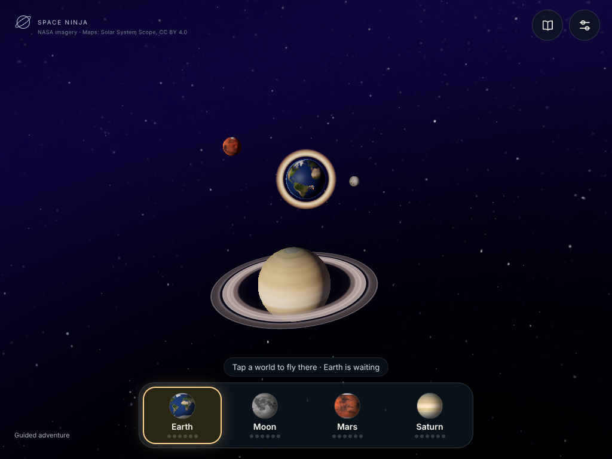
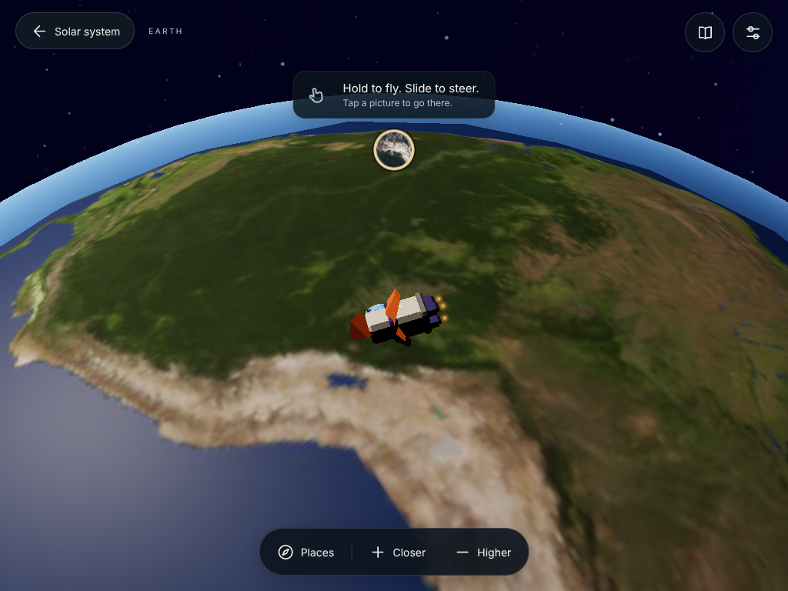
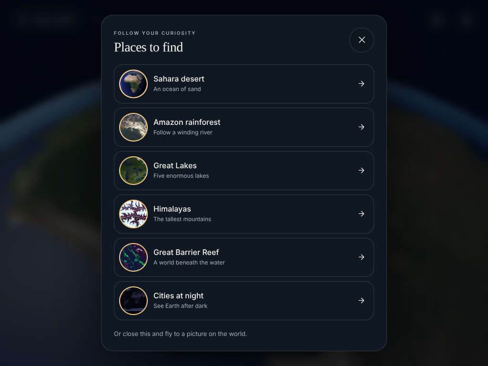
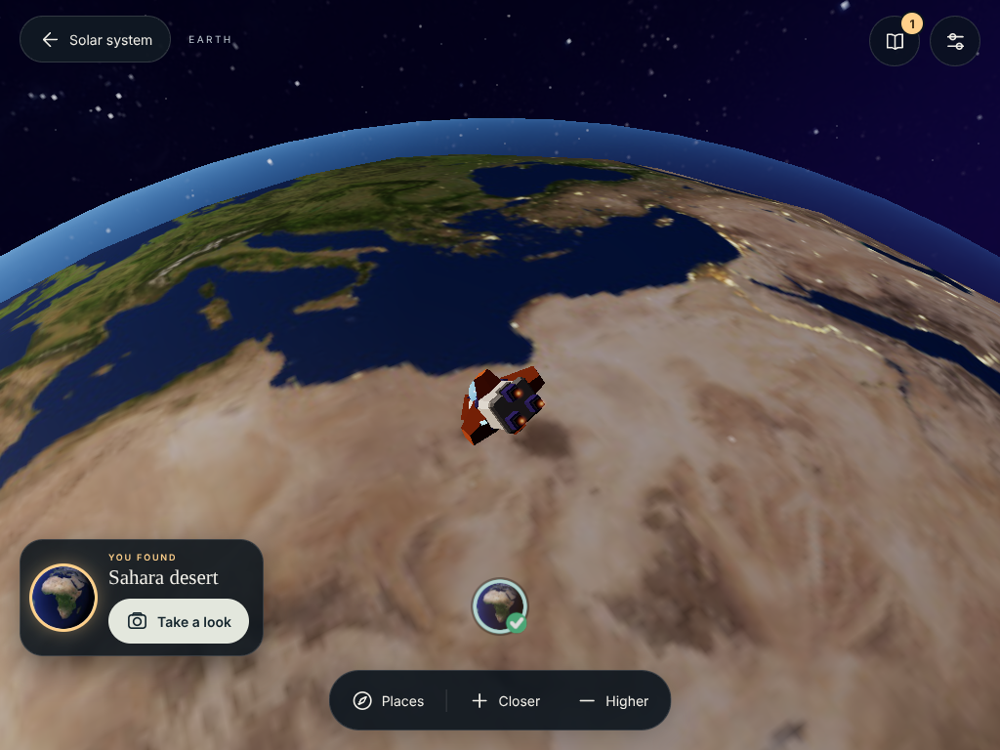
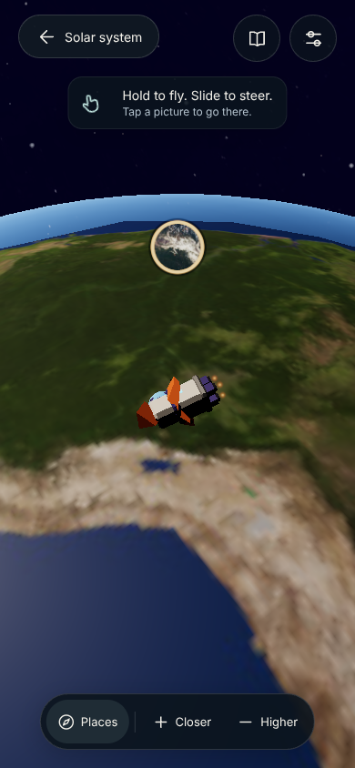
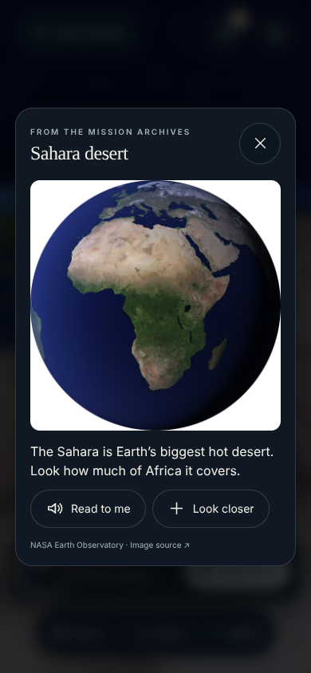
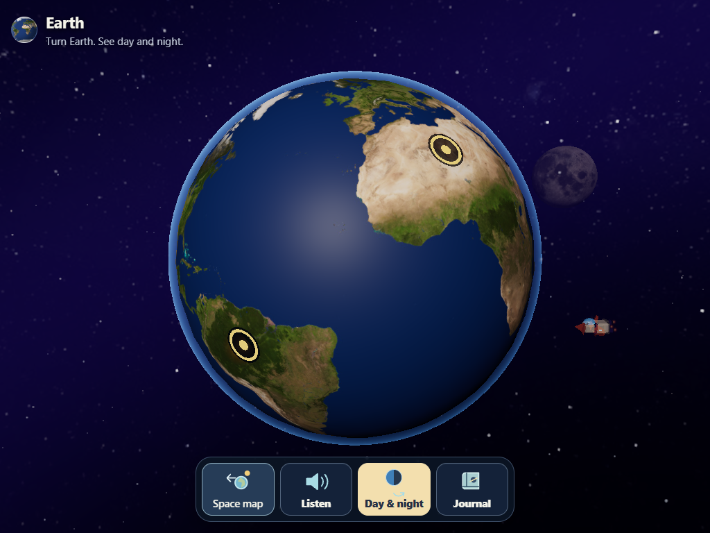

Explorer review · is it child friendly?
A review of the close-flight explorer at ?explorer (from Codex's moon-exploration trial)
against the product north star in AGENTS.md: a gentle explorer for children of about 5–8 on an
older Android tablet. The owner's observation was that it looks nicer for adults but may not suit children.
The captures below are full resolution (device scale 1) from software WebGL, so 3D surfaces look softer than on a
real device. Everything here is adult/AI judgement. No child or physical tablet has tested it.
Try the explorer · Open the guided adventure
Verdict. The owner's instinct is right. The explorer's play is often good for children:
flying low over real places, letting go to stop, and every world open. Its presentation is an adult
editorial style that depends on reading, small text and thin, look-alike controls. Keep the close flight,
replace the visual design and controls with the adventure's.
What works for children
- Being somewhere. Skimming over the Sahara or the Amazon is more vivid than the adventure's view of the whole globe.
- Forgiving controls. Hold to fly, let go to stop, and every world open. Nothing to fail, no quota.
- A clear playfield. Controls stay at the edges, which matches the AGENTS.md rule.
- The find card's “Take a look” button is large, bright and obvious. It's the most child-friendly control in the route.
Screen by screen
Tablet · solar system
Works
Pictured world buttons with a gold, pulsing suggestion. A clear, inviting scene.
Concerns
The progress dots are 6px and grey. The 9–10px caps brand and NASA credit, and the 11px “Guided adventure” link,
are on the child's screen. The instruction is a written line. The journal and grown-ups settings buttons
are identical thin-line circles side by side.
Tablet · exploring Earth
Works
The world fills the screen. The ship is visible and the playfield is clear.
Concerns
How to fly is explained only in words: “Hold to fly. Slide to steer. Tap a picture to go there.” The way out is the word
“← Solar system”, the kind of worded exit that child feedback already led the adventure to replace with a pictured
Space map button. “+ Closer / − Higher” asks a child to think about camera height. The place marker is a small photo circle,
less noticeable than the adventure's gold rings.
Tablet · Places list
Concerns
A text menu with subtitles under a decorative “FOLLOW YOUR CURIOSITY” label. Tapping a row glides there and the place
counts as found, so finding becomes choosing from a menu. It's the most readable route in the explorer, so children
will probably use it. Serif headings bring back the September serif direction the October adventure replaced.
Tablet · a find
Works
A large, high-contrast “Take a look” button. The journal badge counts up.
Concerns
The payoff is quiet: a corner card with a short scale-in and a tiny gold “YOU FOUND”. Narration plays only when a
recording exists for that place (src/explorer/main.ts). There's no sticker, glow on the world or completion moment.
Phone · exploring
Concerns
The same text-led coach takes the top centre. The dock labels shrink to 13px. All the controls share one dark-glass style,
so nothing stands out as the thing to press.
Phone · photograph
Works
Real imagery, short words and a big close button.
Concerns
“Read to me” must be pressed, so a non-reader sees a paragraph first. The return is only an X. The adventure now also offers
a pictured return to the world, after child feedback.
More phone captures
For comparison · the guided adventure
Tablet · Earth in the guided adventure (approved 3 October)
Chunky, coloured, labelled buttons with a clear primary choice. Gold place rings, a pictured Space map exit and narrated
arrival. Less atmospheric, but a child can read it without help.
Recommendation
- Keep the explorer's play: close flight over real places, letting go to stop, open worlds.
- Use the adventure's controls: big pictured buttons, the Space map exit, gold place rings, and a large type
size with no decorative caps labels on child screens. Move credits and the route link to the grown-ups panel.
- Show, don't tell, how to steer: an animated hand or narrated cue instead of the written coach. Replace Closer/Higher
with pinch or automatic height.
- Make finding the game: make the Places list pictures only, or move it into the journal, so flying to a place remains
the main way to find it. Give each find a bigger payoff.
- Consider merging rather than keeping two apps: as the manual-flight section of AGENTS.md allows, steering could become a mode on
an arrived world in the adventure instead of a separate route with its own UI.
Open questions for a tablet session with a child
- Does the child hold and slide to steer without an adult showing them?
- Do they fly to places, or go straight to the Places list?
- Do they find the way back to the solar system without reading?
- Does a find feel rewarding enough to try for another?
Captured on 12 October 2026 from main c25b010. Run npm run dev and open ?explorer to reproduce.